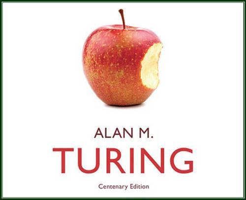

Welcome to My Static Site!
This is a simple static HTML page deployed on Vercel.
Image
Gallery

Video
Your browser does not support the video tag.
X (Twitter) Link
Follow me on X
Telegram Link
Join me on Telegram